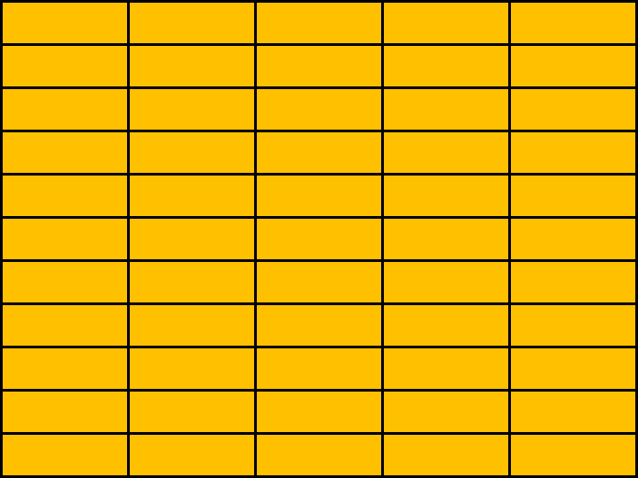

RETURN TO MASTER DISPLAY
PHASER STATUS
LAUNCHER STATUS
ROLLBAR FORWARD
ROLLBAR AFT
MAIN HULL FORWARD
MAIN HULL STARBOARD
MAIN HULL PORT
WARNING: PORT LAUNCHER TUBE SEALS HEAVILY WORN. NOT TO BE USED FOR PROBE LAUNCHES OR DRILLS
QUANTUM TORPEDO MAGAZINE STATUS
PHOTON TORPEDO MAGAZINE STATUS
POLARON TORPEDO MAGAZINE STATUS

TRICOBALT DEVICE MAGAZINE STATUS